Tracker
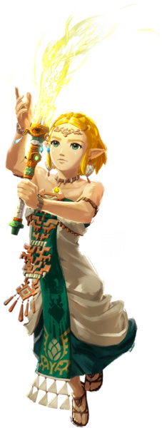
Hyrule Warriors Les Chroniques du Sceau
Le tracker global
Zelda
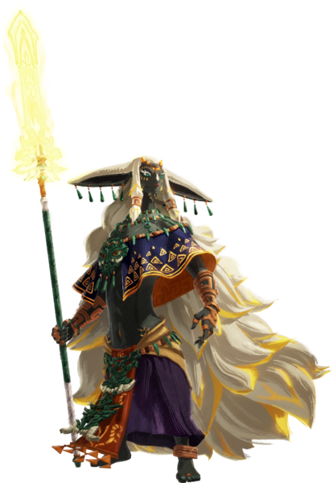
Hyrule Warriors Les Chroniques du Sceau
Les stats de Zelda
Rauru
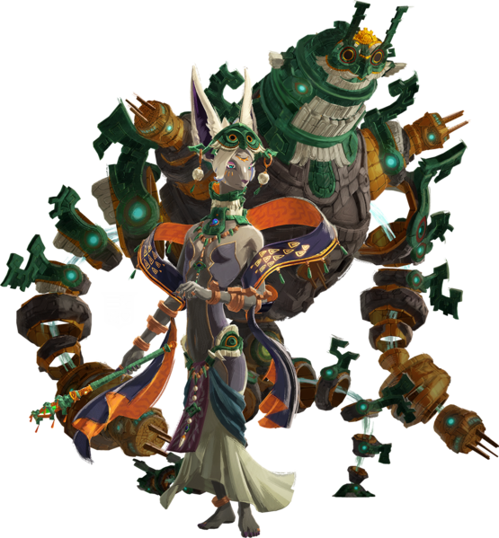
Hyrule Warriors Les Chroniques du Sceau
Les stats de Rauru
Mineru
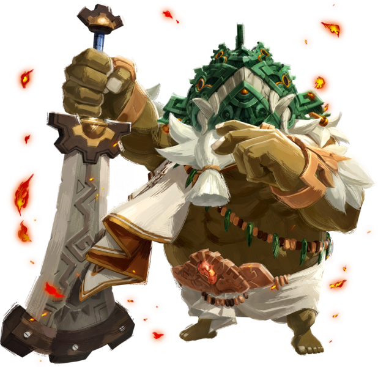
Hyrule Warriors Les Chroniques du Sceau
Les stats de Mineru
Agraston
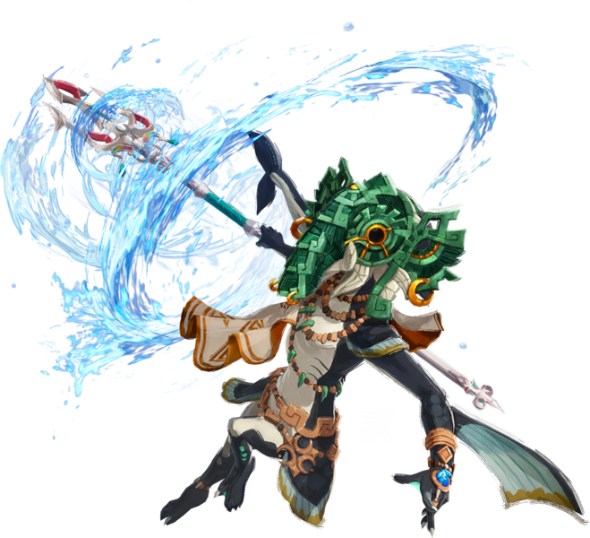
Hyrule Warriors Les Chroniques du Sceau
Les stats d'Agraston
Qia
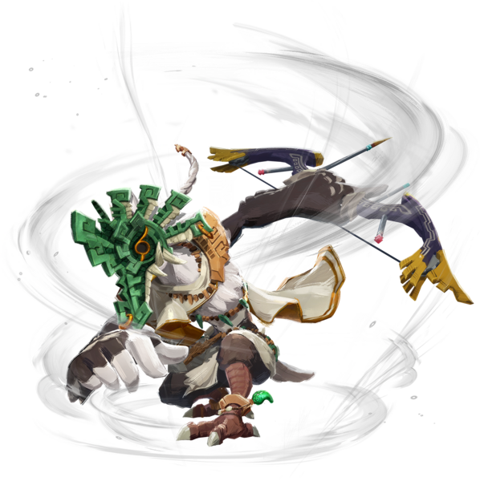
Hyrule Warriors Les Chroniques du Sceau
Les stats de Qia
Raphica
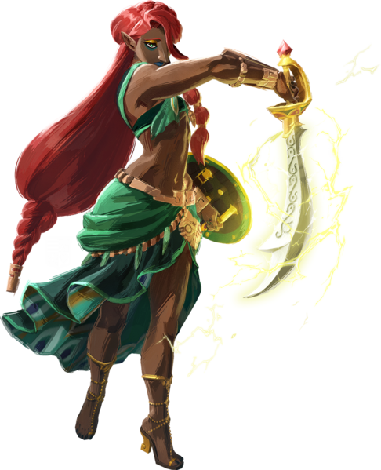
Hyrule Warriors Les Chroniques du Sceau
Les stats de Raphica
Ardi
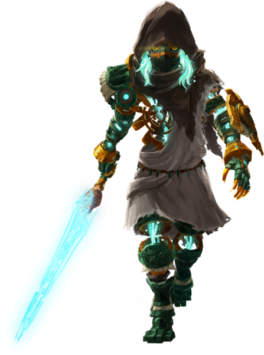
Hyrule Warriors Les Chroniques du Sceau
Les stats d'Ardi
Golem
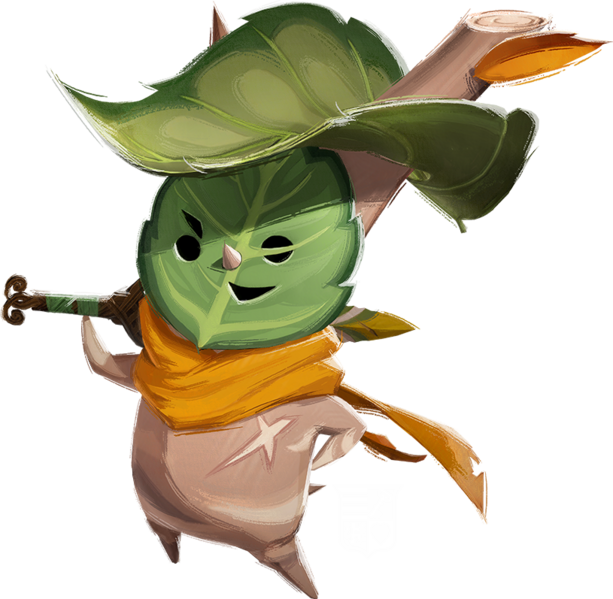
Hyrule Warriors Les Chroniques du Sceau
Les stats du Golem
Calamo
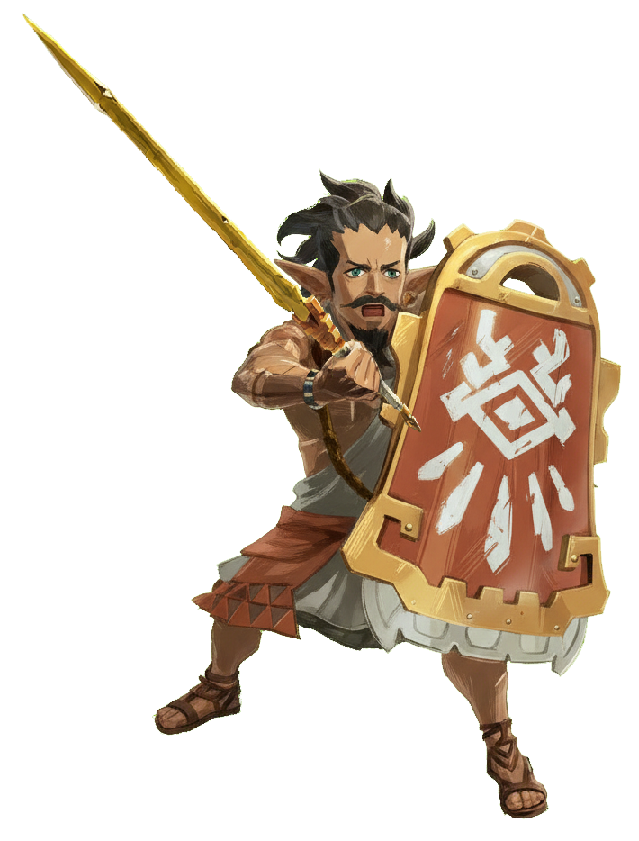
Hyrule Warriors Les Chroniques du Sceau
Les stats de Calamo
Typhan
Hyrule Warriors Les Chroniques du Sceau
Les stats de Typhan

Quino
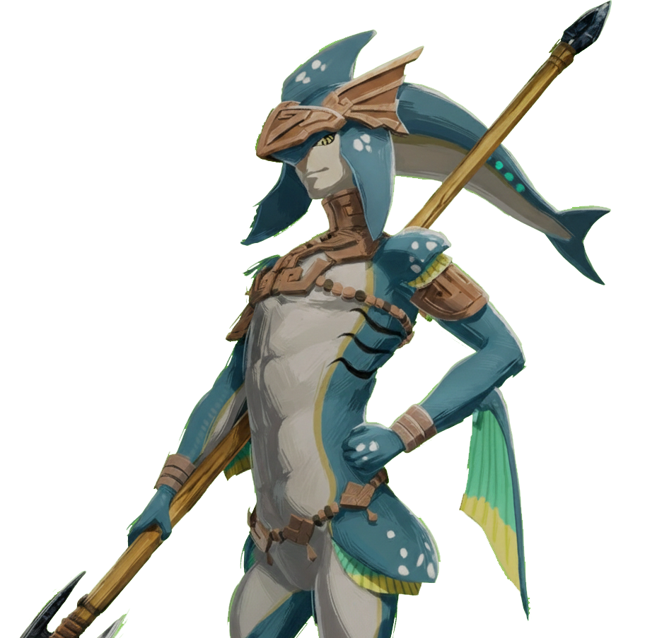
Hyrule Warriors Les Chroniques du Sceau
Les stats de Quino
Cadlan
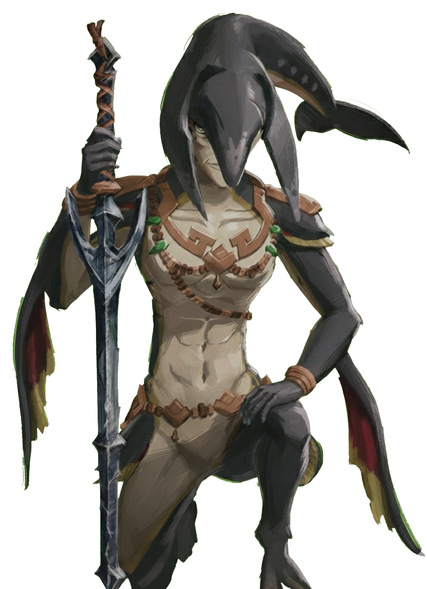
Hyrule Warriors Les Chroniques du Sceau
Les stats de Cadlan
Lago
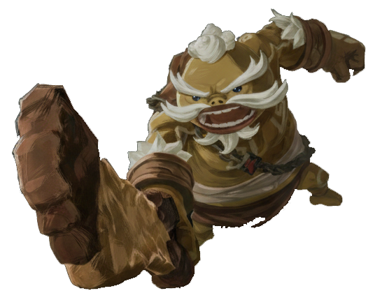
Hyrule Warriors Les Chroniques du Sceau
Les stats de Lago
Pastos
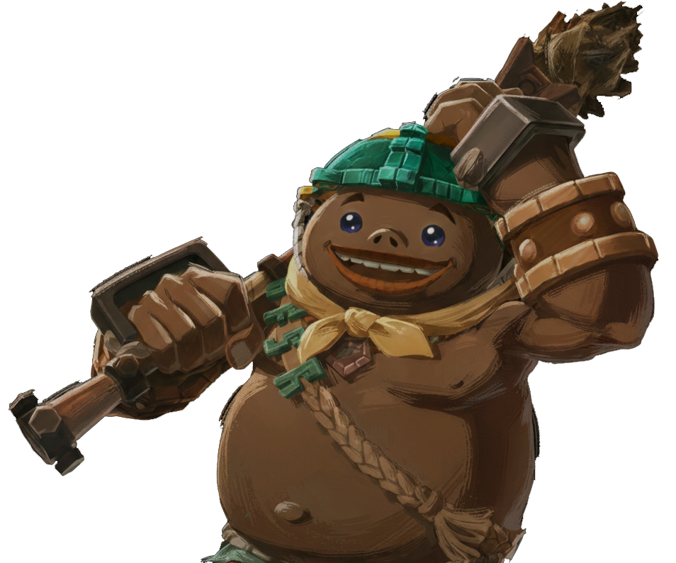
Hyrule Warriors Les Chroniques du Sceau
Les stats de Pastos
Braton
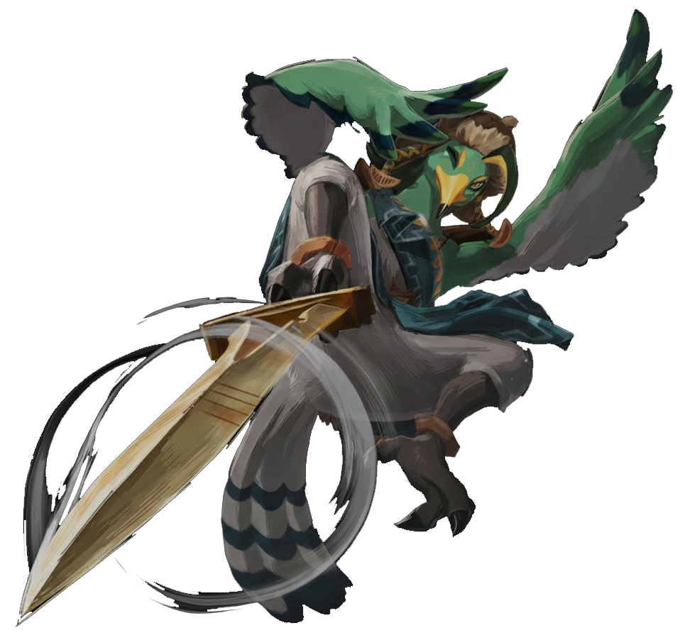
Hyrule Warriors Les Chroniques du Sceau
Les stats de Braton
Vence
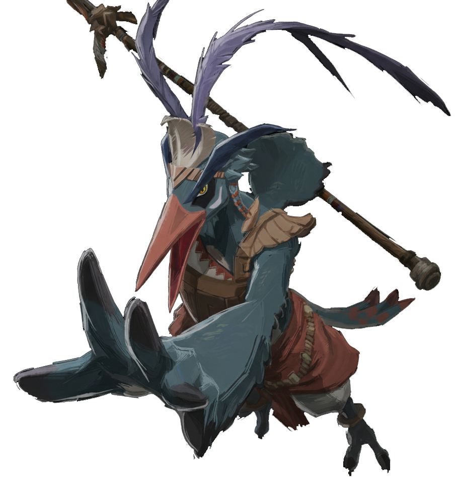
Hyrule Warriors Les Chroniques du Sceau
Les stats de Vence
Masba
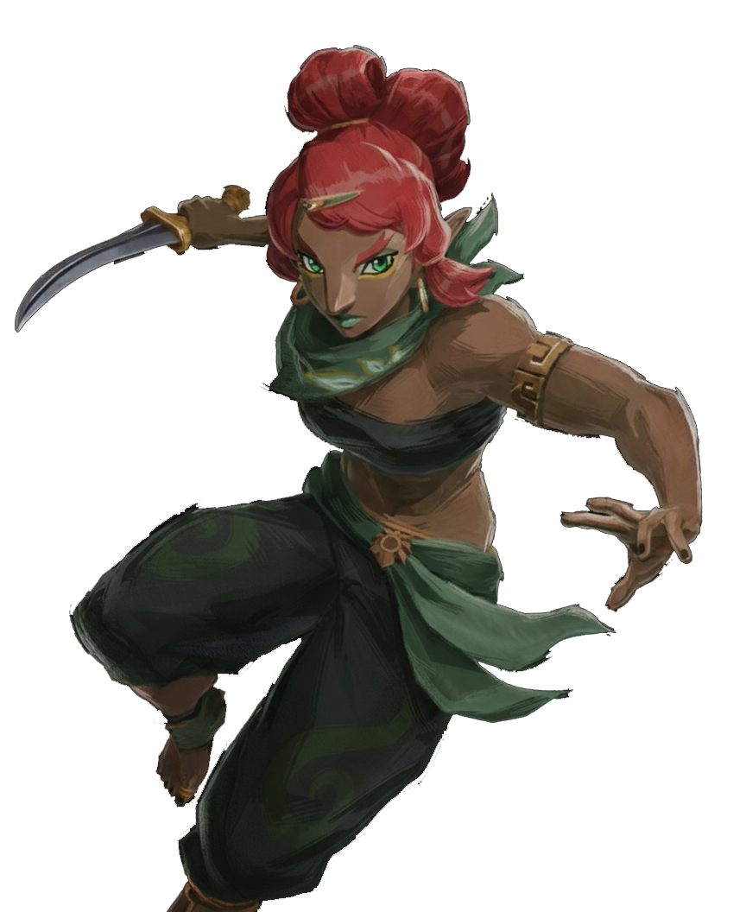
Hyrule Warriors Les Chroniques du Sceau
Les stats de Masba
Sholani
Hyrule Warriors Les Chroniques du Sceau
Les stats de Sholani

Ronza
Hyrule Warriors Les Chroniques du Sceau
Les stats de Ronza